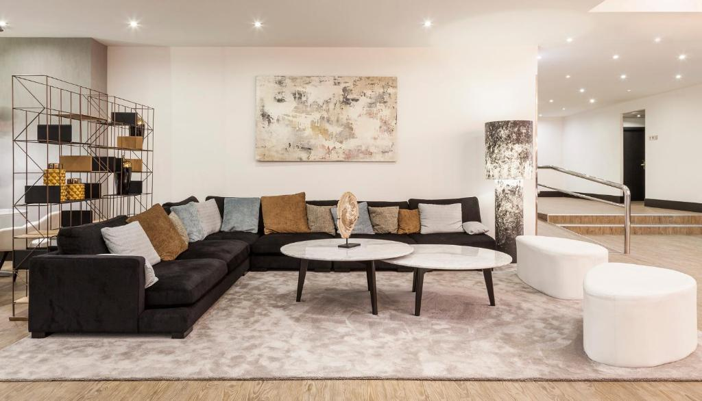
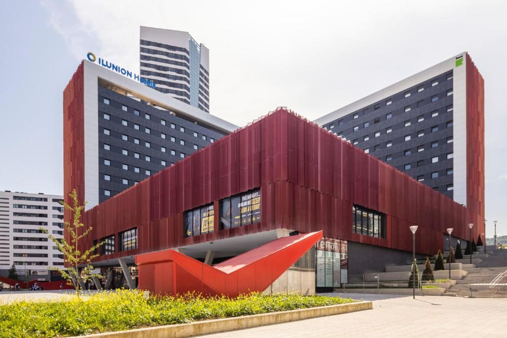
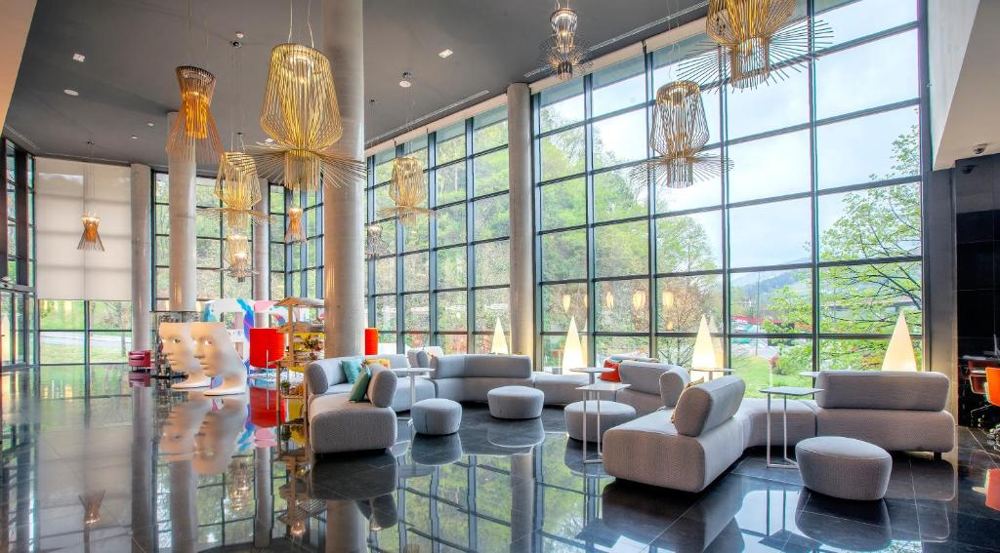

| Hoteles de Bilbao. |
|  |
Todas las habitaciones del Hotel Ilunion Bilbao son modernas y están equipadas con aire acondicionado, minibar y TV vía satélite de pantalla plana. El restaurante del hotel, La Kedada Bar & Restaurant, sirve un desayuno variado y platos de cocina tradicional vasca. El Hotel Ilunion Bilbao está situado junto al parque Iturriza Casilda, a solo 600 metros del Museo de Bellas Artes de Bilbao. |
Valoración 7.5 Wifi gratis ✓ |
|  |
Habitaciones con aire acondicionado y salón compartido. Cuenta con restaurante, recepción 24 horas, servicio de habitaciones y WiFi gratuita en todas las instalaciones. El hotel sirve un desayuno buffet con cocina en vivo. También hay una cafetería y una piscina en la planta 11 con unas vistas espectaculares a la ciudad. Las habitaciones están equipadas con escritorio, TV de pantalla plana, baño privado, ropa de cama y toallas. El alojamiento tiene terraza. |
Valoración 6.7 parking privado ✓ |
|  |
Este elegante hotel de diseño dispone de WiFi gratuita y habitaciones amplias con TV de pantalla plana vía satélite. El hotel cuenta con acceso directo a la autopista A8 y se encuentra a solo 15 minutos en coche del puerto de ferris de Bilbao. Los autobuses que llevan hasta el centro de la ciudad tienen parada junto al hotel. Se sirve un desayuno buffet a diario con cocina en vivo. |
Valoración 7.6 permitido fumar ✓ |